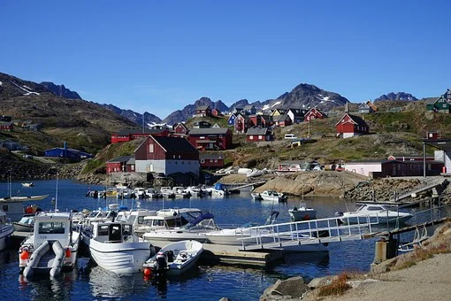
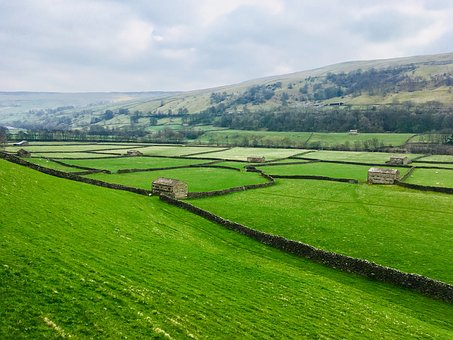

Work Permit for Greenland
Normal processing time 3 months, no Processing fee
click here for more information

Go to St. Helena if you have any special skill
Apply for work permit of St. Helena without any job offer,
click here for more information
General Labor jobs available in New Germany 2021
click here for more information
What is the process to get farming jobs in UK?
Read on the official website of UK government
click here to read

page was updated on 28 March 2021 and next
update will come on 4 April 2021